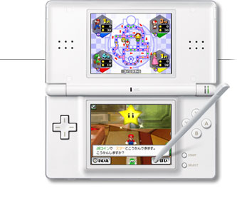
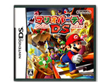
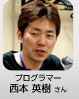
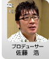
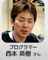
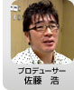

|  | ||
|  |  |
|
![プロデューサー[池田 淳さん]](img/hudson_photo1.jpg)
![シニアディレクター[菊池賢次さん]](img/hudson_photo2.jpg) 
| そんな失敗の上に完成した『マリオパーティＤＳ』ですが、注目してほしいところはどこでしょうか？ |
| 中田： | 今回は声を掛け合いながら遊ぶミニゲームが（いままで以上に）多くなっています。「次右、次左」とか「お前上、オレは下」という感じで、思わず声が出ちゃうというか、声を出さないと上手くいかないミニゲームを多く盛り込んでいます。 |
| 佐藤： | 中田さんが言わなかったら、言おうと思ってメモしていたことをそのまま話してくれましたね。 |
| ミニゲームを考える上で大切にされているポイントはなんでしょうか？ |
| 中田： | とくに決めごとはしていませんね。面白いミニゲームだったら何でもいいという感じになっているので。タッチペンでこういう風に遊ばせる、と操作関係から考える人もいれば、企画から始まって、あとからそこに操作方法をくっつけるなど、さまざまです。 |
| 菊池： | すべてのベースは複数で遊んで楽しく競い合えるということですね。 |
| 廣瀬： | 短い時間でワッと楽しめるのが大切なので、ちょっとダラダラしてしまったり、「なんでこんなことをしているんだろう？」と冷めてしまうものはダメですね。シリーズを通じて言えることは、操作が楽しい＆見ている画面が楽しい、この２つに尽きると思います。 |
| 山根： |  何をしたら勝ちなのか、ルールがすぐにわかることも大切ですよね。スタート直後にルールがわからず躊躇するようなミニゲームは結果的に残りませんでしたね。 何をしたら勝ちなのか、ルールがすぐにわかることも大切ですよね。スタート直後にルールがわからず躊躇するようなミニゲームは結果的に残りませんでしたね。 |
| 生田： |  わかりやすさはもちろんですけど、“どつき合い”も大切です（笑）。お互いへの干渉要素があると盛り上がります。ただ、数十種類のミニゲームのなかには干渉要素の高いものもあれば、運要素の高いものもあるという感じで、いつもハドソンさんには考えてもらっています。 わかりやすさはもちろんですけど、“どつき合い”も大切です（笑）。お互いへの干渉要素があると盛り上がります。ただ、数十種類のミニゲームのなかには干渉要素の高いものもあれば、運要素の高いものもあるという感じで、いつもハドソンさんには考えてもらっています。 |
| 佐藤： | それらは最低ラインですよね。さらに声が出るとか、声を掛け合えるミニゲームが最高だと思います。とくに『マリオパーティＤＳ』は中田さんがおっしゃったとおりバラバラの画面で遊んでいるので、いままで以上に声を掛け合う必要があるし、そこが面白さを広げてくれている。 |
| 菊池： | 開発現場を眺めていると、プレイ中に思わず声を出すというのが面白いミニゲームだと気づきますね。デバッグの時間が取れるようになってくると、あちこちから奇声や、こういったインタビューの場では言えないような言葉が出てきますから（笑）。 |  |
| 佐藤： | そしてＤＳでもＷｉｉでもミニゲームが形になってきて感じるのは、バリエーションがあった方が断然面白いということですね。１つ１つの面白さはもちろんなんですけど、“次に何が来るんだろう？”という期待を抱けることがすごく面白くしていると思います。 | |
| 中田： | いろいろな遊び方ができるのが「マリオパーティ」なんですよ。レースゲームが入っていたり、パズルが入っていたりとか。そういうジャンルに囚われていないというか。少し言い方が古いですけど（笑）、「遊びのデパート」みたいな雰囲気を感じてくれると嬉しいです。 |
| たしかに初めてプレイするミニゲームはとくにドキドキします。 |
| 佐藤： | 自分の家族が遊んでいるのを見ていると「Ａちゃんはコレが上手いからなあ」とか、「でもＢちゃんはアレが上手いやんか」とか言ってますよ。そういうのが「マリオパーティ」の良さだと思います。バリエーションの大切さを感じますね。 |